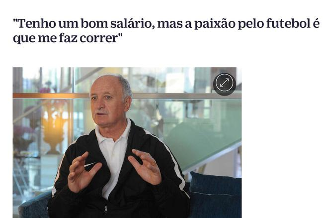
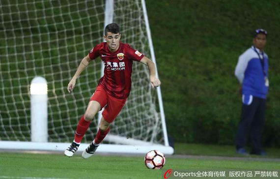

北京时间1月22日消息，近日，广州恒大主教练斯科拉里接受了葡萄牙媒体“dn.pt”的采访，斯科拉里表示自己拒绝了来自西班牙和英格兰的报价， 宁愿
留在广州恒大执教。斯科拉里还表示广州恒大这个转会期不会再引进球员，对广州恒大的阵容满意。广州恒大有很大的机会再次夺得中超联赛冠军。
在谈到广州恒大是否会引进葡萄牙球员时，斯科拉里直接给出了广州恒大在这个转会期不会再引进球员的答案，“我现在没有签任何人的计划。现在规则改变
了。 我有四个外援，(在每一场中超联赛中)只能有三个外援出场比赛，其中还有一个球员不能在亚冠联赛中报名。我要澄清，没有任何人是我们的引援目标，
我不(向广州恒大)推荐任何人，不想签下任何人。所以，当有人说我们要引进球员是不正确的。我对我球队的阵容满意。” 斯科拉里透露自己拒绝了来自西班
牙和英格兰的报价，“我不知道我是否还会去葡萄牙或者巴西或者其它地方执教，原则上讲，我目前在中国执教， 我适应我所在俱乐部的环境。今年，我跟俱
乐部续约了，我可能还会继续在中国一段时间。如果我想回到欧洲执教的话，本赛季开始前我就有机会。 我从西班牙和英格兰收到了报价，但中国让我觉得安心，
我宁愿留在广州(恒大)，在那里我有一个梦幻般的氛围。”
体育新闻

北京时间2月7日，2017赛季亚冠联赛资格赛即将打响，上海上港队将在主场迎战泰国素可泰队。这也是上港在经历换帅、内外援更
迭之后首度在球迷面前正式亮相， 今天上午全队抵达上海体育场进行了赛前适应场地的训练，目前全队状态不错，队员士气高昂，全队上下渴望用一场开门红
顺利挺进2017赛季亚冠联赛。 从今天球队的赛前训练来看，全队目前没有太多伤病问题，前场三名巴西外援奥斯卡、胡尔克以及埃尔克森不出意外将会悉
数登场，另外一位外援艾哈迈多夫应当也 会占据一个中场位置，与蔡慧康搭档出任双后腰。 后防线方面，博阿斯执教球队之后傅欢、贺惯、石柯三名93届
球员在先前几场热身赛中一起配合时间较长，默契程度不错，而在左边，王燊超、张卫、郑致云都是目前 状态不错。明晚一战，对于本赛季全新的年轻的上港后
防线是一次考验，也将是一次宝贵的磨练提升机会。 上港预计首发： 门将：颜骏凌； 后卫：王燊超、石柯、贺惯、傅欢； 后腰：蔡慧康、
艾哈迈多夫； 前卫：武磊、奥斯卡、胡尔克； 前锋：埃尔克森
 北京时间1月22日消息，近日，广州恒大主教练斯科拉里接受了葡萄牙媒体“dn.pt”的采访，斯科拉里表示自己拒绝了来自西班牙和英格兰的报价，
宁愿留在广州恒大执教。斯科拉里还表示广州恒大这个转会期不会再引进球员，对广州恒大的阵容满意。广州恒大有很大的机会再次夺得中超联赛冠军。
在谈到广州恒大是否会引进葡萄牙球员时，斯科拉里直接给出了广州恒大在这个转会期不会再引进球员的答案，“我现在没有签任何人的计划。现在规则改变了。
我有四个外援，(在每一场中超联赛中)只能有三个外援出场比赛，其中还有一个球员不能在亚冠联赛中报名。我要澄清，没有任何人是我们的引援目标，
我不(向广州恒大)推荐任何人，不想签下任何人。所以，当有人说我们要引进球员是不正确的。我对我球队的阵容满意。”
斯科拉里透露自己拒绝了来自西班牙和英格兰的报价，“我不知道我是否还会去葡萄牙或者巴西或者其它地方执教，原则上讲，我目前在中国执教，
我适应我所在俱乐部的环境。今年，我跟俱乐部续约了，我可能还会继续在中国一段时间。如果我想回到欧洲执教的话，本赛季开始前我就有机会。
我从西班牙和英格兰收到了报价，但中国让我觉得安心，我宁愿留在广州(恒大)，在那里我有一个梦幻般的氛围。”
北京时间1月22日消息，近日，广州恒大主教练斯科拉里接受了葡萄牙媒体“dn.pt”的采访，斯科拉里表示自己拒绝了来自西班牙和英格兰的报价，
宁愿留在广州恒大执教。斯科拉里还表示广州恒大这个转会期不会再引进球员，对广州恒大的阵容满意。广州恒大有很大的机会再次夺得中超联赛冠军。
在谈到广州恒大是否会引进葡萄牙球员时，斯科拉里直接给出了广州恒大在这个转会期不会再引进球员的答案，“我现在没有签任何人的计划。现在规则改变了。
我有四个外援，(在每一场中超联赛中)只能有三个外援出场比赛，其中还有一个球员不能在亚冠联赛中报名。我要澄清，没有任何人是我们的引援目标，
我不(向广州恒大)推荐任何人，不想签下任何人。所以，当有人说我们要引进球员是不正确的。我对我球队的阵容满意。”
斯科拉里透露自己拒绝了来自西班牙和英格兰的报价，“我不知道我是否还会去葡萄牙或者巴西或者其它地方执教，原则上讲，我目前在中国执教，
我适应我所在俱乐部的环境。今年，我跟俱乐部续约了，我可能还会继续在中国一段时间。如果我想回到欧洲执教的话，本赛季开始前我就有机会。
我从西班牙和英格兰收到了报价，但中国让我觉得安心，我宁愿留在广州(恒大)，在那里我有一个梦幻般的氛围。”